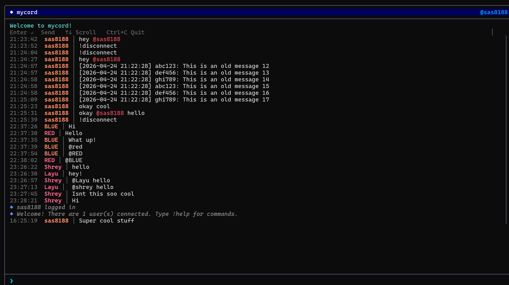
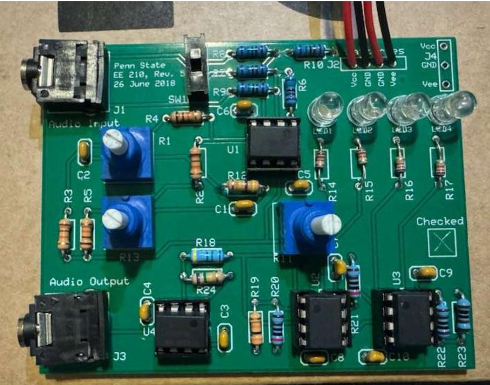
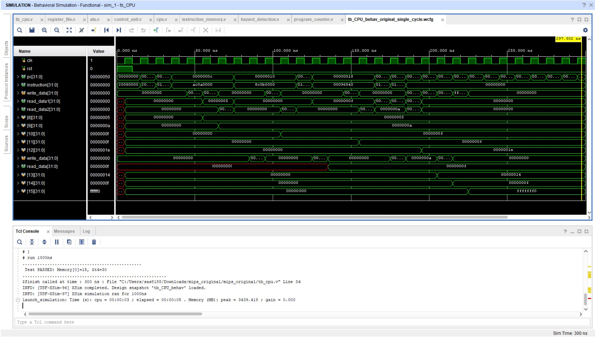
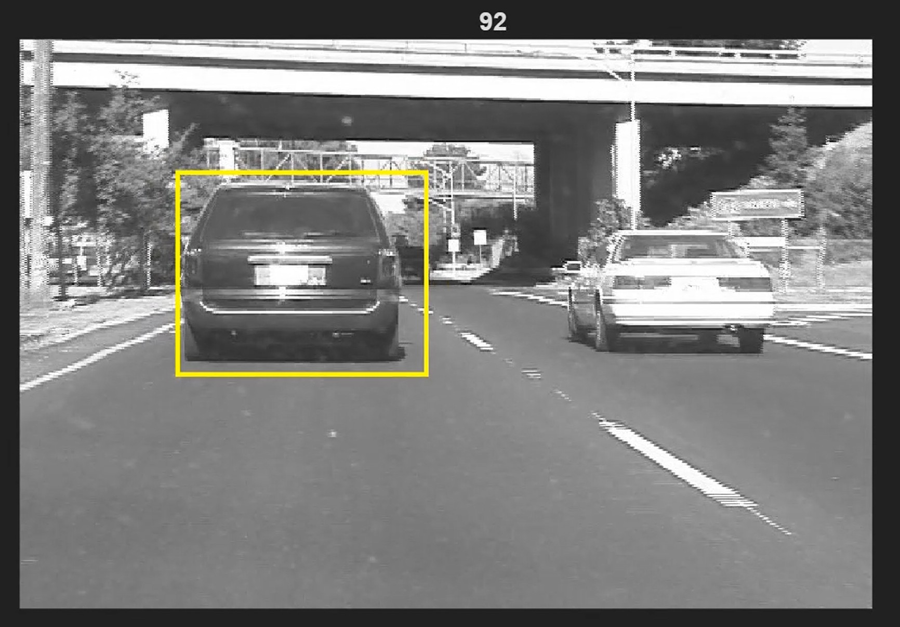

Computer Engineer · Penn State '27
Shrey Singala
My studies span: FPGAs, embedded systems, and real-time hardware design. Below are a few of the projects ive built.
- 4Featured projects
- 3.62GPA
- HW + SWFull stack, silicon to cloud
01. About
I'm a Computer Engineering student at Penn State with a passion for building real systems: instrumented rocket payloads, bare-metal firmware, pipelined processors, analog circuits, and networked software. I like owning a project from concept to a working, validated result.
02. Projects
Click any project for the full story: how it works, how I built it, and what I took away.

Multi-Threaded Chat Application
A full-duplex terminal chat client and server speaking a custom binary protocol over TCP, with concurrent send/receive and airtight input validation.
View project →
Analog Audio Signal Processing System
A multi-stage analog audio processor (mixer/karaoke, tone control, volume, and a visual amplitude meter) taken from simulation all the way to a PCB.
View project →
2-Way Superscalar Pipelined CPU
A 5-stage pipelined MIPS processor in Verilog, extended with new instructions and full hazard handling, verified cycle-accurately on an FPGA.
View project →
Object Tracking, Lucas-Kanade & Matthew-Baker
Two affine template trackers implemented from scratch: a classic Lucas-Kanade tracker and the faster inverse-compositional Matthew-Baker method, with a full failure-mode analysis.
View project →03. Skills
Software
- C / C++
- Python
- Java
- MySQL
- AWS
- TCP/IP
- Git
- Data Analysis
Hardware
- Verilog
- FPGA
- STM32
- Bare-Metal Firmware
- I2C
- PWM
- Sensor Fusion
- PID/LQR Control
- 3D Modeling
- Analog Circuit Design
- PCB Prototyping
04. Experience
-
Co-Founder & Events Director
Jan 2025 – PresentAWS Cloud Club · Penn State
Co-founded one of the fastest-growing orgs on campus (150+ active members), led a 6-member operations team, and coordinated with AWS Solutions Architects to deliver hands-on cloud workshops and AWS Jams.
-
CSE Learning Assistant, Data Structures & Algorithms
Aug 2025 – PresentPenn State
Lead recitations for 100+ students, giving detailed feedback on algorithmic correctness, runtime complexity, and edge cases. Received faculty commendation for feedback quality.
-
Student Training Program
Jan 2024 – May 2024Student Space Program Laboratory (SSPL) · Penn State
Designed and built a sensor-instrumented rocket payload from concept to launch, collected temperature/pressure/altitude/IMU data through ascent, and diagnosed a parachute-deployment failure in the post-mission debrief.
05. Get in touch
Open to internships and engineering roles. The fastest way to reach me is email. Happy to share source code or walk through any of the projects above.